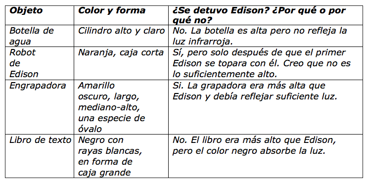

En esta actividad, los estudiantes aprenden más sobre cómo funcionan los sensores de luz infrarroja de Edison y programan a Edison para detectar obstáculos.
En esta actividad, los estudiantes crean un programa que hace que Edison evite chocar contra obstáculos
mediante el uso de los LED de luz infrarroja (IR) y el sensor IR del robot para detectar objetos directamente
en frente del robot.
Esta actividad explora más a fondo cómo funcionan los sensores de luz infrarroja en Edison y hace que
los estudiantes prueben qué obstáculos pueden y no pueden detectarse.
• Puede ser útil revisar los componentes de Edison, enfatizando la ubicación de los LED y el sensor de luz infrarroja de Edison antes de que los estudiantes comiencen la actividad.
• Los obstáculos deben ser opacos pero no demasiado oscuros (por ejemplo, no negros) y al menos tan altos como Edison para que el robot los detecte.
• Este programa funcionará mejor si se usa el bloque "avanzar" en EdBlocks.
Este bloque configura los motores de Edison para "avanzar" hasta que una condición u otro bloque de
impulsión le indique a los motores que hagan otra cosa. Asegúrese de que los estudiantes estén usando
el bloque correcto:
1. Haga que los estudiantes presenten sus hallazgos de la actividad.
Practique buenas habilidades de presentación, incluida la planificación de su presentación, tener una
visión y proyectar su voz.
2. Cree una lista maestra de los resultados de la clase, haciendo que cada estudiante agregue sus resultados
a la lista principal.
Comparta los resultados de la clase con otras clases o escuelas mediante programas en línea como Google
Classroom o un foro. Observe las similitudes y diferencias entre los diferentes obstáculos que las personas
probaron.
¿Qué nos dice esto sobre lo que otras escuelas tienen en sus aulas?
¿Qué preguntas podemos pensar al observar otros resultados?
Practique la buena etiqueta en línea y los comportamientos seguros para compartir en línea.
Tenga en cuenta: esta tabla es un ejemplo de respuesta. Los resultados de los estudiantes dependerán de sus experiencias.
